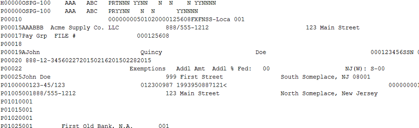

Testing is, to be honest, the typical developers least favorite phase in the development cycle, and data validation is probably the worst part of it. Even simple outbound integrations can require a great deal of tedious, time consuming file auditing. Suppose you need to extract a value from a certain position in a fixed width file, or from a certain column in a delimited file, and compare it to report data. For a one-off validation, you can do this with excel's text import tool, but in most cases you'll have to repeat the import process with each new file. (Apparently there's a way to save and reuse an excel import template outlined here https://blogs.office.com/2010/06/10/importing-text-files-in-an-excel-sheet/ but the process appears to be kind of cumbersome.) Fortunately, Python has a few pre-built libraries and tools that make text file parsing relatively easy. If you're willing to open a text editor and do a bit of scripting, you can create a reusable tool for reading and validating file data. Save it alongside your XSLT, studio code, and/or report definition and your colleagues will have a pre-built testing framework that should cut a substantial amount of time and effort from the test phases of future integration projects. This is also a great way to spur Python uptake in your organization. Just sayin'.
To follow along here, you'll really just need the python binaries, downloaded here: https://www.python.org/downloads . Oh, and your favorite text editor.
Once the install is complete, you may want to add the 'python' executable to your path environment variable (Start->Computer->Properties->Advanced System Settings->Advanced Tab-Environment Variables) for convenience. Once that's done, all you'll need to do to execute a program is save your code file (a .py extension is customary) and type 'python [filename]' into a command prompt in your working directory. Lets look at the first few lines of a typical script:
import sys import re import struct for line in open(sys.argv[1], 'r'):
import sys
for line in open(sys.argv[1], 'r'):
fields = line.split(',')import struct input_line = ' FIRSTSTR** SECONDSTR*' line_format = '20x10s3x10s' # skip the first 20 chars, read the next 10 into a string, skip 3 more, read the last 10 into another string fieldstruct = struct.Struct(line_format) result = fieldstruct.unpack_from [first_string, second_string] = result(input_line)
import re
re.match('^ABC', input_line)Let's take a look at a practical example. I'm sure some of you will recognize this type of file right away, and groan:

For the uninitiated, this is what an ADP PSS file looks like - A file-level header, followed by up to around 30 per-worker lines, and one or two file trailer records. (Yes, it's completely anonymized.) While the lines themselves are fixed-width, but the number of lines for each payment can vary based on a number of factors (your tenants payroll setup, the number of lines on the paystub, etc.) The best strategy here is to look for the specific lines contining the data you're interested in based on the line record ID in the first six characters of the line, and then read the data at specific positions in the line based on the ADP provided file specification.
for line in open(sys.argv[1], 'r'):
if re.match('^P00025', line):
fmt = '6x40s' # skip 6 characters, read the next 40
fieldstruct = struct.Struct(fmt)
result = fieldstruct.unpack_from
fields = result(line)
worker_name = fields[1]
There's a larger demo script available here. Seriously, unit testing is painful and time consuming and with an approach like this you can 1.) save yourself a ton of repeated work from one project to another and 2.) move towards standardized unit tests, reducing the likelihood of missing errors that will burn you later.
I want to also note that there is a package for analytics called 'pandas' available, which allows for almost SQL-like aggregations on data sets once they've been read into standard structures. As I write this, the functionality for reading fixed-width files is still pretty new and probably doesn't have the flexibility you need yet (though it reads csv files beautifully.) In time I may update this post with an alternate approach. Stay tuned.
Hope this helps.2015 @matthewrichen mrichen.github.io/wdlearn/